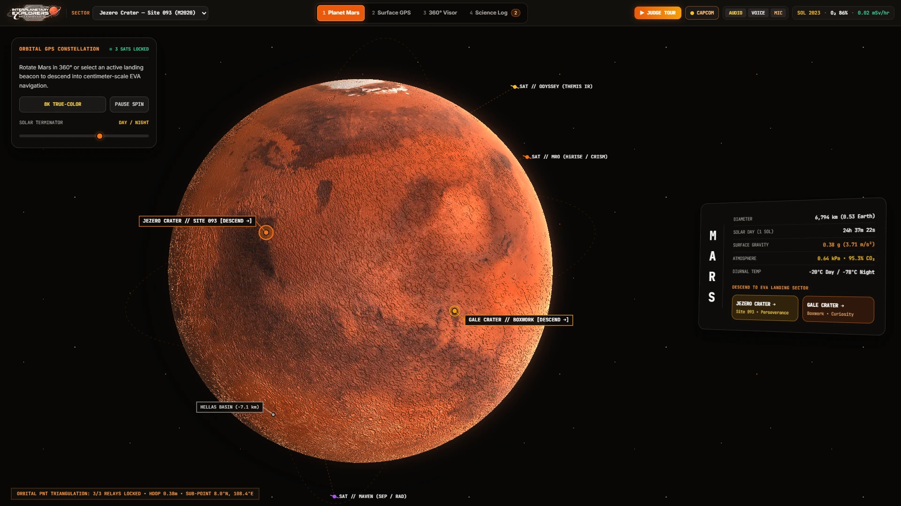
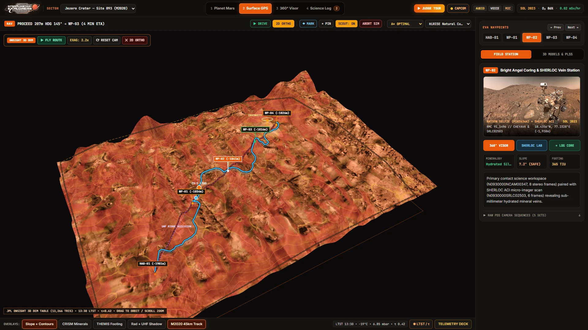
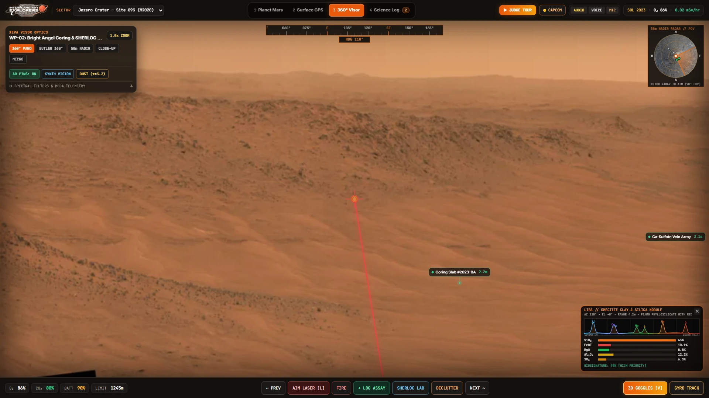
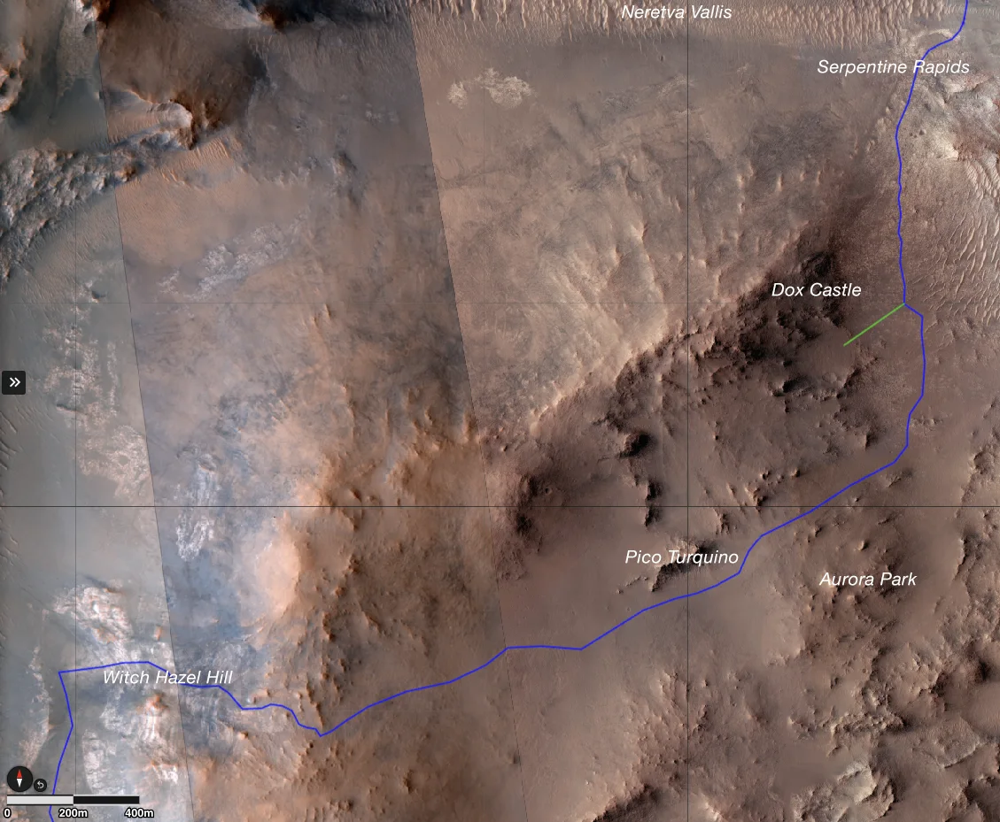

ARES-NAV
Orbital-to-Surface GPS, Suit-Physics Pathfinding & Stereoscopic 3D Visor Optics for Human Mars Exploration
An autonomous browser-based flight console built on 219 real Mars 2020 Perseverance and MSL Curiosity mission files—guiding astronauts safely across Jezero Crater and Gale Crater.



From Analogue EVA Field Trials to Every Classroom on Earth
ARES-NAV bridges mission-grade planetary GIS with universally accessible hardware—ready for human spaceflight testing and STEM education today.
Artemis & Analogue Ready
By swapping DEM elevation rasters and gravity constants (0.38g Mars to 0.16g Moon), the same metabolic A* planner and visor HUD adapt directly to Artemis Lunar South Pole traverses, CHAPEA, and desert EVA field tests.
$5 Smartphone Mars Field Trip
Removes the barrier of $3,500 VR headsets. Students anywhere in the world can insert a phone into simple cardboard lenses, stand inside a 242-MP Mars panorama, fire LIBS lasers, and run two-player Mission Control exercises.
100% Offline Browser Resilience
Built with zero paid API keys, zero external map servers, and zero installation steps—ensuring reliable execution in isolated habitat networks, classrooms, or judge browsers worldwide.
Click ▶ JUDGE TOUR in the top bar for a guided 5-stage narrated walkthrough, or open the HTTPS link on your smartphone and tap 3D GOGGLES for live IMU head-tracking.
